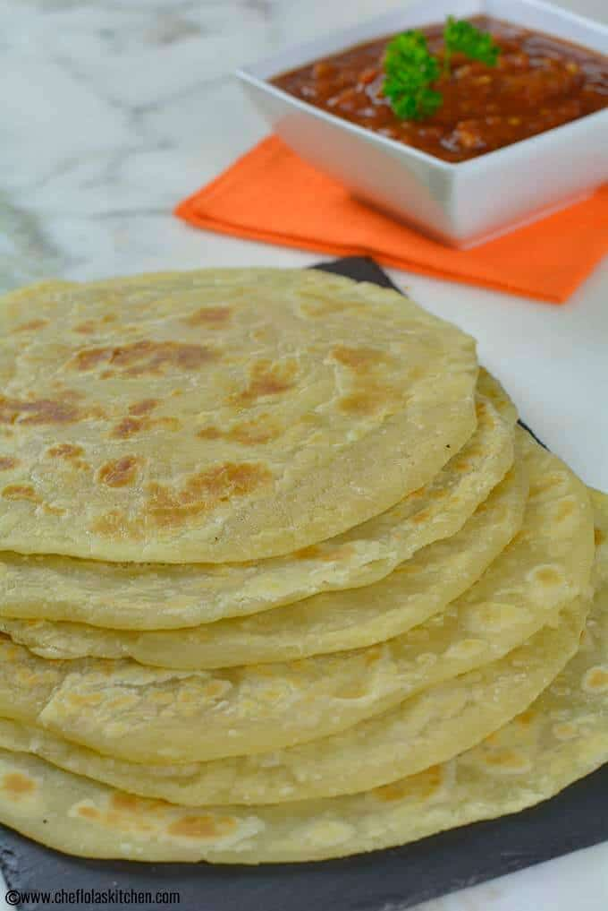

Chapati recipe

Description
East African Chapati is a beautiful unleavened flat Bread eaten in East Africa in Countries like Burundi Uganda, Mozambique, Kenya,… It has a delicious but subtle flavor that is why it can be easily paired with almost any dish whether sweet or savory making it an extremely versatile side dish staple.
The East African Chapati is very similar to the Indian Paratha (one of the most popular unleavened flatbreads in India). However, culture might have played its role in the slight difference in its mode of preparation compared to the Indian variety.
Ingredients
- 3 cups all-purpose flour plus a little more flour for kneading
- 1 Teaspoon Salt
- 3 Tablespoons oil
- 1¼ Cups Water
Steps
-
In a large bowl, combine flour, salt, and oil in a bowl and mix thoroughly. Add the water a little at a time to form a soft and sticky dough.
- Turn to a floured surface; knead for about 10 to 15 minutes until it becomes smooth and elastic. Place in a bowl. Cover and let it rest in a warm place for about 20 to 30 minutes.
- Turn onto a lightly floured surface; divide the dough into 8 equal parts and roll each piece into a circle. You can roll out the dough into a circle cook the Chapatis at this point. However, if you want a flaky and well-layered chapati, move on with the rest of the steps below.
- Flour your work surface again and start rolling out each of the coiled dough to about 1/8th thickness (the dough will eventually shrink up to about 1-2/4 inch thickness).